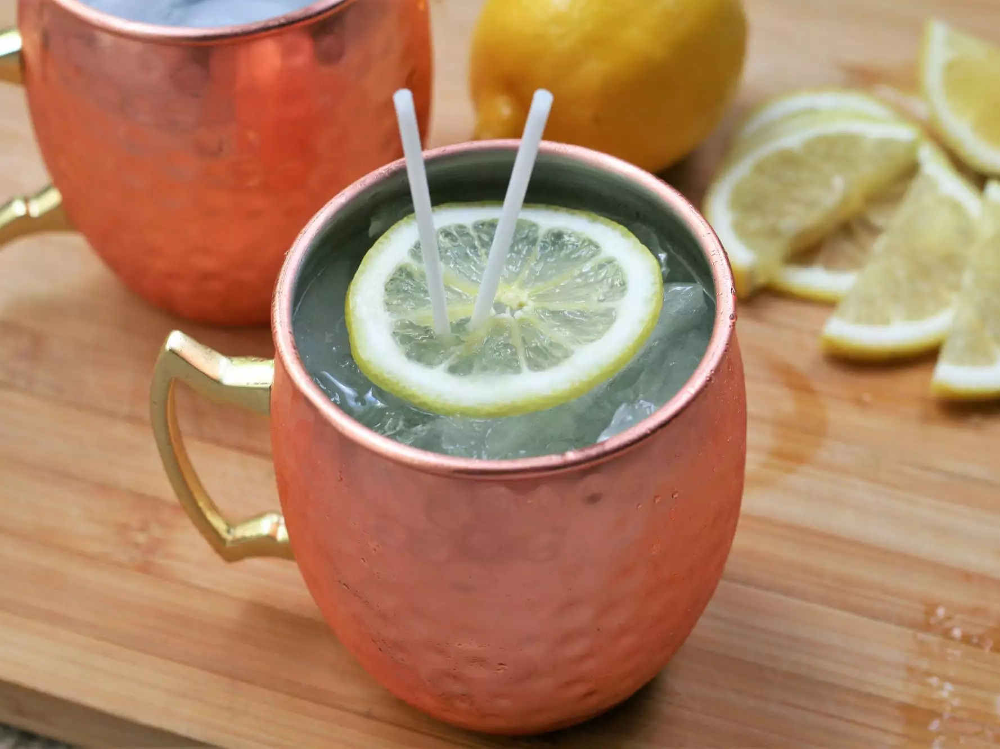

Limoncello Moscow Mule
Prep Time: 5mins, Servings: 1

Ingredients
- 1 cup ice
- 1/2 fluid ounce fresh lime juice
- 1.5 fluid ounces limoncello liqueur
- 1.5 fluid ounces vodka
- 5 ounces ginger beer
- 1 thin lemon slice (optional)
Directions
- Fill a copper mule mug with ice. Add lime juice, limoncello, and vodka; stir to combine. Top with ginger beer. Lightly stir again and garnish with lemon slice.
Nutrition Facts
Per Serving: 315 calories; fat 0.1g; sodium 12.2mg; carbohydrates 36.2g; protein 0.1g